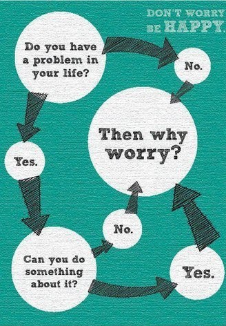
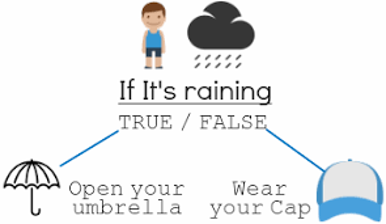

Control Statements¶
Control statements enable us to specify the flow of program control; ie, the order in which the instructions in a program must be executed.

Control flow constructs¶
if statements
while loop
for in loop
break statement
pass statement
continue statement
if statement¶

Example¶
Finding greatest of 2 numbers
a=int(input("Enter the number1: "))
b=int(input("Enter the number2: "))
if(a>b):
print("number1 is greater than number2")
else:
print("number2 is greater than number1")
---------------------------------------------------------------------------
StdinNotImplementedError Traceback (most recent call last)
<ipython-input-1-4b37fb0200d5> in <module>
----> 1 a=int(input("Enter the number1: "))
2 b=int(input("Enter the number2: "))
3
4 if(a>b):
5 print("number1 is greater than number2")
c:\programdata\anaconda3\envs\jbook\lib\site-packages\ipykernel\kernelbase.py in raw_input(self, prompt)
853 if not self._allow_stdin:
854 raise StdinNotImplementedError(
--> 855 "raw_input was called, but this frontend does not support input requests."
856 )
857 return self._input_request(str(prompt),
StdinNotImplementedError: raw_input was called, but this frontend does not support input requests.
if… elif..else¶
Example¶
finding greatest number of 3 numbers
a=int(input("Enter the number1: "))
b=int(input("Enter the number2: "))
c=int(input("Enter the number3: "))
if(a>b and a>c):
print("number1 is greater")
elif(b>a and b>c):
print("number2 is greater")
else:
print("number3 is greater")
Enter the number1: 16
Enter the number2: 11
Enter the number3: 25
number3 is greater
While loop¶
while loop Repeats a statement or group of statements while a given condition is true.
It tests the condition before executing the loop body.
Example¶
a=0
while(a<10):
print(a)
a+=1
0
1
2
3
4
5
6
7
8
9
For loop¶
for loop Executes a sequence of statements multiple times and abbreviates the code that manages the loop variable.
Example¶
for a in range(5 ,10):
print(a)
5
6
7
8
9
Pass Statement¶
Pass is a Placeholder for python
If you write a code for looping but u want to implement in future.
Empty body of loop will give an error
So we can write pass inside it means ”does nothing”
Example¶
s={2,3,4,55,66}
for v in s:
pass
Continue statement¶
The continue statement in C programming works somewhat like the break statement.
Instead of forcing termination, it forces the next iteration of the loop to take place, skipping any code in between.
Example¶
l=[1,2,3,4,5,6]
for i in range(len(l)):
if(l[i]==4):
continue
print(l[i])
1
2
3
5
6
Break Statement¶
The break is a keyword in C which is used to bring the program control out of the loop.
The break statement is used inside loops.
The break statement breaks the loop one by one, i.e., in the case of nested loops, it breaks the inner loop first and then proceeds to outer loops.
Example¶
l=[1,2,3,4,5,6]
for i in range(len(l)):
if(l[i]==4):
break
print(l[i])
1
2
3